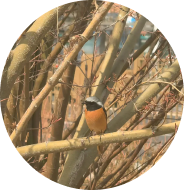
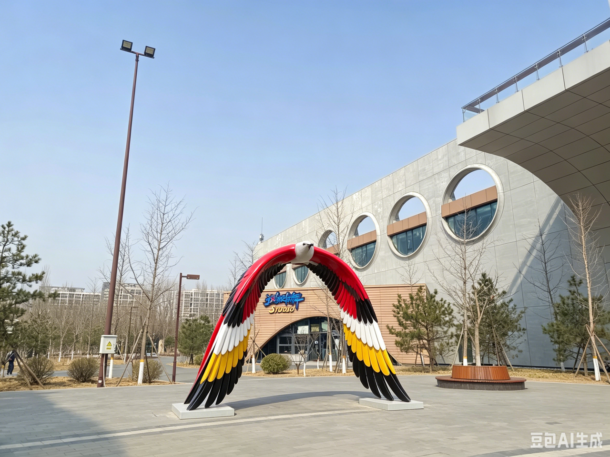

Let's go
birding
10 Oct · 北京昌平
全部
湿地
森林
城市
鸟类卡
水鸟爱好者
任务介绍……
北京市，昌平区，……

去打卡
TODAY
任务完成情况
2 / 5 已完成
40%
全部
已完成
进行中
栖息地卡
鸟类卡
生态危机
道具卡
用户名称
Lv.3 · 湿地观察员
小组名字
组员1
组员2
组员3
获得勋章

将鸟类雕塑放入取景框
道具卡
生态循环
道具卡
生态循环
功能
领取
地图
任务
图鉴
我的